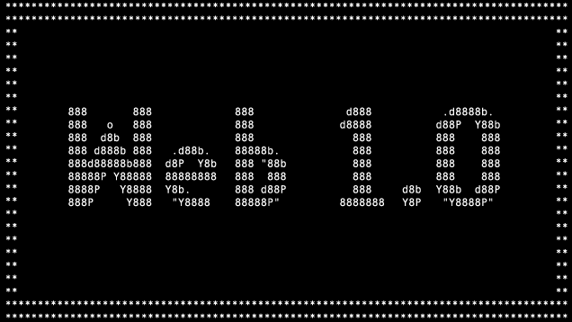

Línea del tiempo:
Evolución de la web
Web 1.0

La Web 1.0 empezó en los años 60's junto al Internet,
de la forma más básica que existe, con navegadores de
solo texto, como ELISA, era bastante rápido pero muy simple.
Web 2.0

La Web 2.0 en cambio, es un concepto que se originó en una
sesión de brainstorming entre Dale Dougherty de O’Really y
Craig Cline de MediaLive International, quienes estaban
preparando una conferencia y decidieron hablar del renacimiento
de la Web después de la crisis de los punto com en 2001, en la
que fracasaron páginas Web de muchas empresas.
Web 3.0

Aplicaciones Web conectándose a aplicaciones Web, las personas
siguen siendo el centro de la información y la Web es semántica.
Web 4.0

Se añaden tecnologías como la Inteligencia Artificial, la Voz
como vehículo de intercomunicación para formar una Web Total.
Regresar